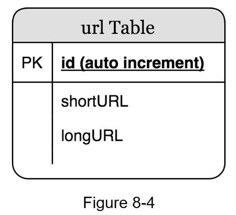
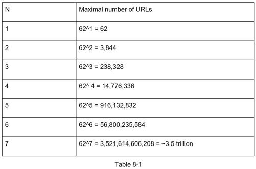
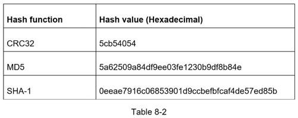
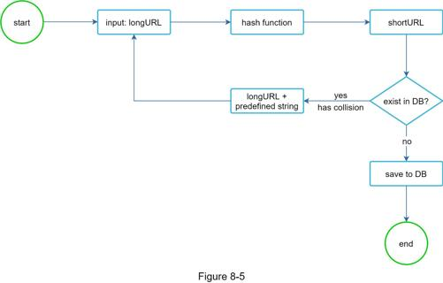
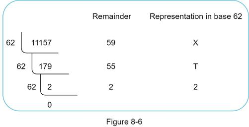
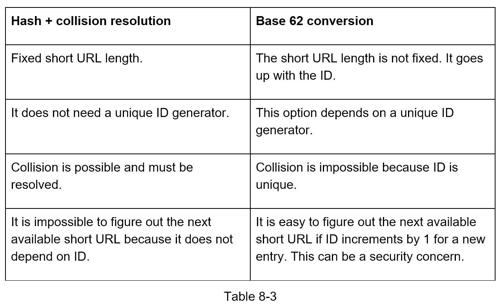
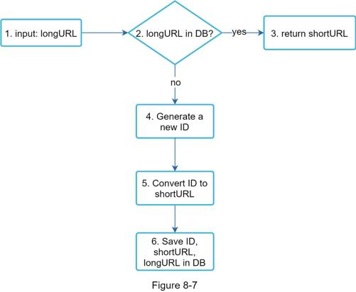
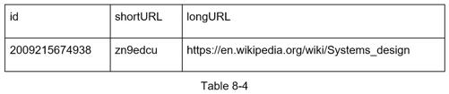
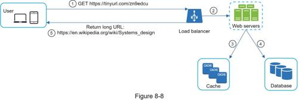

Up until now, we have discussed the high-level design of URL shortening and URL redirecting. In this section, we dive deep into the following: data model, hash function, URL shortening and URL redirecting.
In the high-level design, everything is stored in a hash table. This is a good starting point; however, this approach is not feasible for real-world systems as memory resources are limited and expensive. A better option is to store <shortURL, longURL> mapping in a relational database. Figure 8-4 shows a simple database table design. The simplified version of the table contains 3 columns: id, shortURL, longURL.

Hash function is used to hash a long URL to a short URL, also known as hashValue.
The hashValue consists of characters from [0-9, a-z, A-Z], containing 10 + 26 + 26 = 62 possible characters. To figure out the length of hashValue, find the smallest n such that 62^n ≥ 365 billion. The system must support up to 365 billion URLs based on the back of the envelope estimation. Table 8-1 shows the length of hashValue and the corresponding maximal number of URLs it can support.

When n = 7, 62 ^ n = ~3.5 trillion, 3.5 trillion is more than enough to hold 365 billion URLs, so the length of hashValue is 7.
We will explore two types of hash functions for a URL shortener. The first one is “hash + collision resolution”, and the second one is “base 62 conversion.” Let us look at them one by one.
To shorten a long URL, we should implement a hash function that hashes a long URL to a 7-character string. A straightforward solution is to use well-known hash functions like CRC32, MD5, or SHA-1. The following table compares the hash results after applying different hash functions on this URL: https://en.wikipedia.org/wiki/Systems_design.

As shown in Table 8-2, even the shortest hash value (from CRC32) is too long (more than 7 characters). How can we make it shorter?
The first approach is to collect the first 7 characters of a hash value; however, this method can lead to hash collisions. To resolve hash collisions, we can recursively append a new predefined string until no more collision is discovered. This process is explained in Figure 8-5.

This method can eliminate collision; however, it is expensive to query the database to check if a shortURL exists for every request. A technique called bloom filters [2] can improve performance. A bloom filter is a space-efficient probabilistic technique to test if an element is a member of a set. Refer to the reference material [2] for more details.
Base conversion is another approach commonly used for URL shorteners. Base conversion helps to convert the same number between its different number representation systems. Base 62 conversion is used as there are 62 possible characters for hashValue. Let us use an example to explain how the conversion works: convert 1115710 to base 62 representation (1115710 represents 11157 in a base 10 system).
•From its name, base 62 is a way of using 62 characters for encoding. The mappings are: 0-0, ..., 9-9, 10-a, 11-b, ..., 35-z, 36-A, ..., 61-Z, where ‘a’ stands for 10, ‘Z’ stands for 61, etc.
•1115710 = 2 x 622 + 55 x 621 + 59 x 620 = [2, 55, 59] -> [2, T, X] in base 62 representation. Figure 8-6 shows the conversation process.

•Thus, the short URL is https://tinyurl.com /2TX
Table 8-3 shows the differences of the two approaches.

As one of the core pieces of the system, we want the URL shortening flow to be logically simple and functional. Base 62 conversion is used in our design. We build the following diagram (Figure 8-7) to demonstrate the flow.

1. longURL is the input.
2. The system checks if the longURL is in the database.
3. If it is, it means the longURL was converted to shortURL before. In this case, fetch the shortURL from the database and return it to the client.
4. If not, the longURL is new. A new unique ID (primary key) Is generated by the unique ID generator.
5. Convert the ID to shortURL with base 62 conversion.
6. Create a new database row with the ID, shortURL, and longURL.
To make the flow easier to understand, let us look at a concrete example.
•Assuming the input longURL is: https://en.wikipedia.org/wiki/Systems_design
•Unique ID generator returns ID: 2009215674938.
•Convert the ID to shortURL using the base 62 conversion. ID (2009215674938) is converted to “zn9edcu”.
•Save ID, shortURL, and longURL to the database as shown in Table 8-4.

The distributed unique ID generator is worth mentioning. Its primary function is to generate globally unique IDs, which are used for creating shortURLs. In a highly distributed environment, implementing a unique ID generator is challenging. Luckily, we have already discussed a few solutions in “Chapter 7: Design A Unique ID Generator in Distributed Systems”. You can refer back to it to refresh your memory.
Figure 8-8 shows the detailed design of the URL redirecting. As there are more reads than writes, <shortURL, longURL> mapping is stored in a cache to improve performance.

The flow of URL redirecting is summarized as follows:
1. A user clicks a short URL link: https://tinyurl.com/zn9edcu
2. The load balancer forwards the request to web servers.
3. If a shortURL is already in the cache, return the longURL directly.
4. If a shortURL is not in the cache, fetch the longURL from the database. If it is not in the database, it is likely a user entered an invalid shortURL.